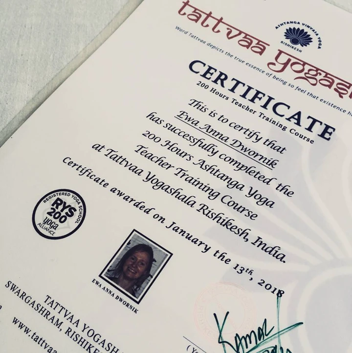

My practiceI believe in the system of Ashtanga Vinyasa Yoga. I do my practice 5, 6 times a week, mostly at 6:00 AM. Sometimes it’s hard, sometimes it’s easy, but I do it anyway. It is part of my daily routine. Ashtanga has a very strict of rules at its core, and if sometimes I don’t follow them all, I always go back to it for its reliability. I’ve practiced with few well-known, experienced teachers and also with a couple of less famous, but nonetheless knowledgeable ones. I’ve been to India three times, but to be honest I’ve learnt the most by being alone on my own mat, and applying regularly what I learnt in these journeys. |
I am a yoga teacherThis is one of the fruits of my first trip to India, to Rishikesh - the world capital of yoga. I've gotten way more than this document, but fortunately we, as humanity, haven't started giving diplomas for that ;) |
 |
Yoga classesI teach in two places at that moment:- at Fraktal, every Thursday at 17:29 - at Yoga Shala Reykjavik, on Wednesday at 18:29 and every other Sunday at 10:29. Let me know if you are interested in attending the class, I will tell you the details. |
Private classesBeing in a yoga studio amongst others is not the taste of everyone, I know it from experience. Private classes solve this issue. I work pretty well with small groups and in one-to-one sessions. I prefer to have time and space to give adjustments when they are needed, and it is easier than with a big group of students. |